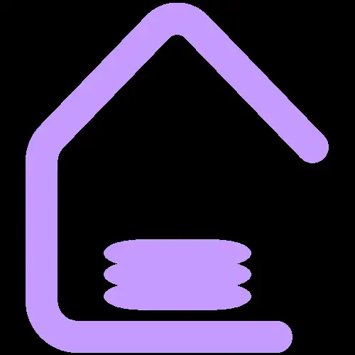

01 / PROJET PROFESSIONNEL
LIN&LOCK
Participation au développement d’un service de location de linge via casiers connectés : site, communication, coordination et fonctionnement opérationnel.
Une sélection de projets professionnels et personnels. Chaque expérience est présentée selon mon rôle réel, sans confondre conception, production et coordination.

Participation au développement d’un service de location de linge via casiers connectés : site, communication, coordination et fonctionnement opérationnel.

Projets de communication en entreprise : coordination de prestataires, outils web, affichage interne et supports commerciaux.
Projet personnel automobile développé sur Instagram en 2023 : environ 200 publications et 11 000 abonnés en huit mois. Production manuelle de contenus et veille éditoriale.
Conception de menus de restaurants : travail de mise en page et de supports imprimés. Les logos présentés appartiennent aux établissements.
Parlons de la manière dont je peux vous accompagner.